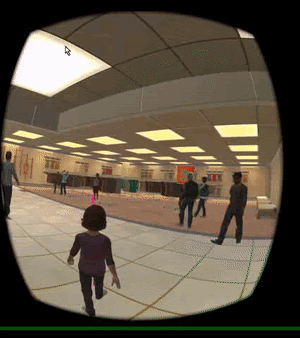
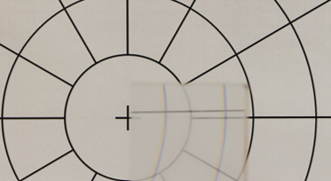
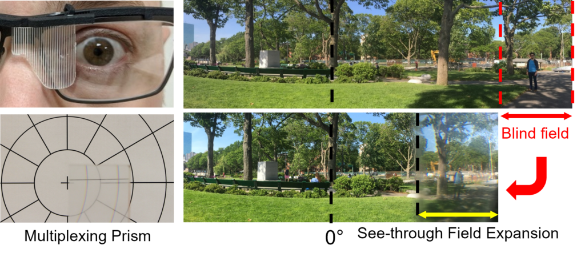
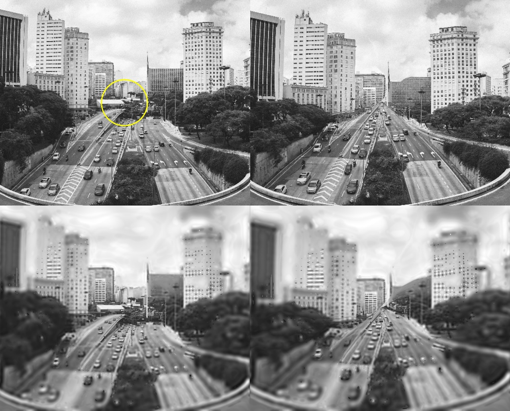
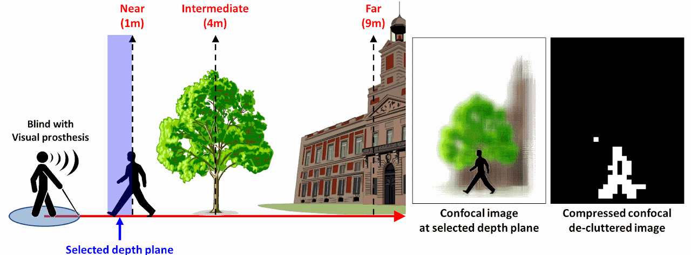
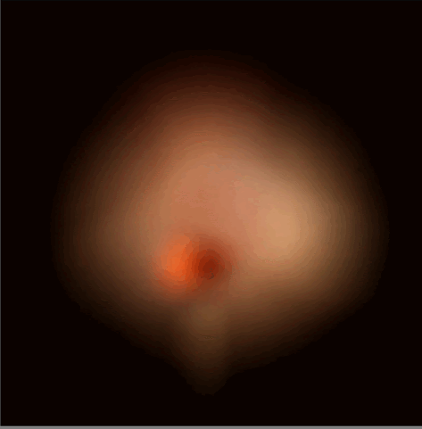

2026 · Research
Spatial-IQ
Hierarchical capability tests help pinpoint where multimodal models succeed or fail at spatial reasoning.
Spatial intelligence, immersive systems, and technologies that connect human vision with computation.
2026 · Research
Hierarchical capability tests help pinpoint where multimodal models succeed or fail at spatial reasoning.
2026 · Research
Efficient rendering connects radiance field representations with interactive, glasses-free 3D displays.
2026 · Research
Studies of hemianopia and cerebral visual impairment measure pedestrian detection, avoidance, and visual scanning during natural walking.
2025 · VSS
Human-observer experiments examine artifact detection across different video comparison interfaces.
Research programs developed at Harvard Medical School and Mass Eye and Ear.

Immersive VR walking environments measure how people detect and avoid approaching pedestrians. Built with Unity and head-mounted displays, the simulations reproduce crowded spaces while recording natural walking behavior.


Optical see-through devices and multiplexing prisms expand the visual field for people with field loss. This work studies how visual confusion, binocular rivalry, contrast, depth cues, and motion affect mobility.

Computational and psychophysical studies examine how overlapping views are combined or compete in binocular vision. The goal is to understand visual perception in field-expansion devices and AR displays.

Light-field imaging emphasizes objects of interest while suppressing background clutter. Active confocal imaging explores front-end processing for retinal and cortical implants and sensory substitution devices.

Integral imaging uses microlens arrays to capture and reconstruct 3D scenes. The work includes real-time reconstruction, depth extraction, confocal image generation, and background suppression for object recognition.